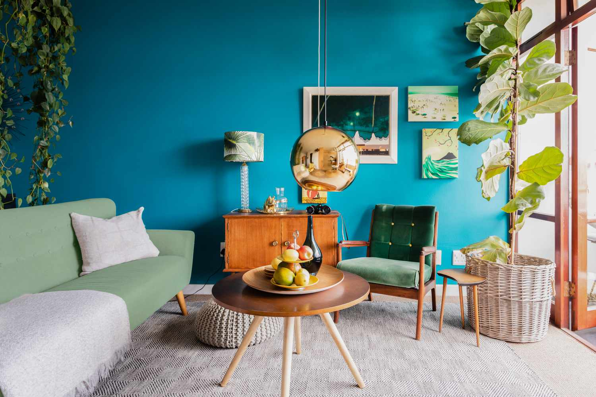

Blog Week 3: Understanding User Alignment
User Experience
When someone enters my website i want them to be in awe , not of me as a person but of just how simplistic yet exhilarating it is to scroll on my website. The journey I want to take them on is a serene yet enriching one where they can see the boundaries I am trying to push In my works and how I want them to exprience it with me. They must be able to understand me as a artist , human and academic , but not take for granted what I have to say for myself as I for one am 100% biased towards myself.
Mapping Content, Experience, and Interface Elements
Outlining my website was one of the hardest things for me to do as it took alot of effort to put what was in my mind into the real world/computer. Its almost too ambitious but not out of reach
Fonts & Color Choice
Something I fully forgot to pay attention to is the UI and how it communicates with the user , does the font bring out my personality while also being readable? Does the color choice for each page match its intended design . Well I can't awnser that for myself but i fully hope it does as It is what i set out to do. Its something i didnt put alot of thought behind yet but I will definilty update you when I do.
Color Board - What I'm Feeling For My Website!
